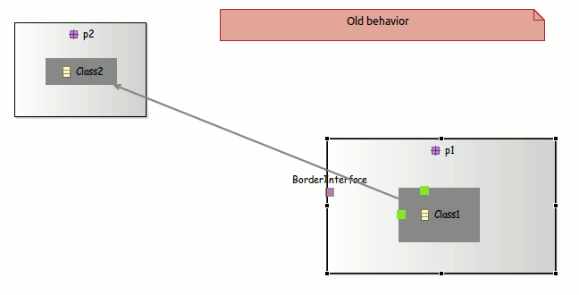
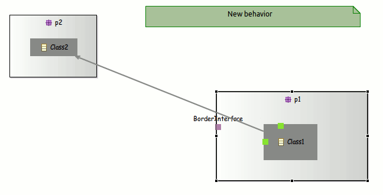
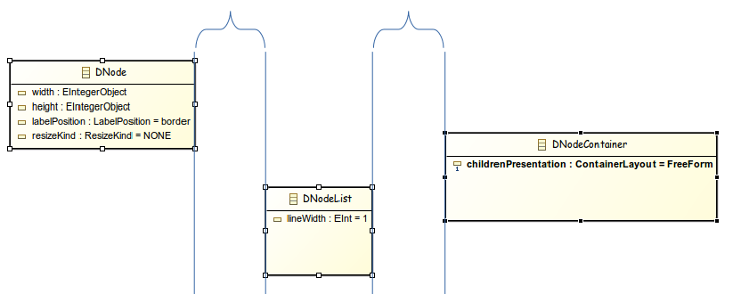
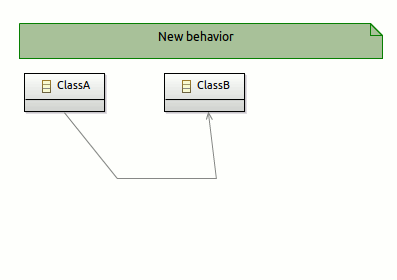
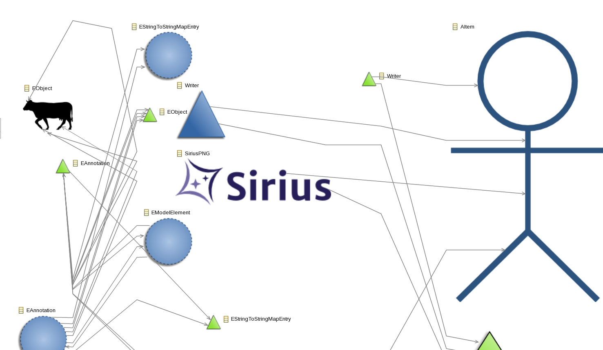
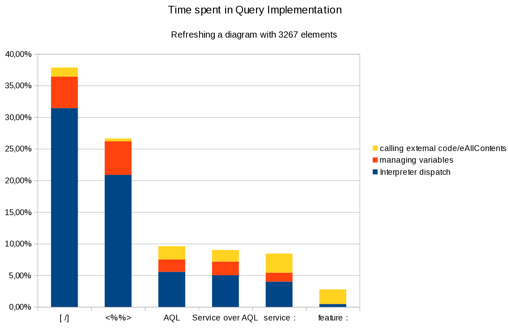

Sirius 3.0
Faster, Stronger and Smarter Diagram Editors
Presented by Cédric Brun
Smarter
Diagram User Experience

Children location when resizing a container
Children location when resizing a container
Positionning Things
- Snap To Shape enabled by default for new diagrams
- Snap To Grid now used when an element is created
- Resize no longer change ports or children's location
- Actions to distribute shapes
- Action to reset the diagram origin
Edges Layouting

Edges Layouting
- Only closest segment is updated when moving a source or target or reconnecting
- Action to explicitely remove a bend point
Beautiful editors
Anchor on borders
Underligned and Strikethrough style for labels
Compartments
Compartments (bis)
Demo
Stronger
| Version | Date | Total Closed | Feature Requests | |
|---|---|---|---|---|
| 1.0.0(Luna) | June 14 | 100 | 2 | |
| 1.0.1 | Aug 14 | 20 | - | |
| 2.0.0 | Oct 14 | 113 | 27 | |
| 2.0.1 | Nov 14 | 2 | - | |
| 2.0.2 | Dec 14 | 15 | - | |
| 2.0.3 | Jan 15 | 16 | - | |
| 2.0.4 | Feb 15 | 8 | - | |
| 2.0.5 | Apr 15 | 8 | - | |
| 3.0.0(Mars) | Jun 14 | 213 | 35 | |
| 426 | 64 | |||
Definition Tooling : demo
- Image path validation and selection wizard
- Quick Outline
- Prioritized sub menus
- Workspace class loading
Query langages
What is the type of var:container ?
Several
Requires stronger information from Query implementation
- No support in legacy <%%> and ocl:
- Improvements in [/]
- Implemented in feature:, var:
- Reference support in aql:
Faster
Goal : 1 Million Model Element
Constant improvements
- Sirius 2.0 : save,context menus,...
- Sirius 3.0 : refresh, memory,...
Core runtime
- Memory Footprint
- use of MinimalEObject
- Colors transformed from full-blown EObject to Immutable DataType
- detection and correction of leaks
- reduce usage of Adapters
- Save Strategy
- Diagram Refresh
- Improvements in the Image cache...
Memory usage improvements
Tables
- UI Runtime
- Model Element Selection Dialogs for big models
- Right-click latency in the explorer
- Better integration with EEF (property views)
- Tables
- SWT Refreshes now done as a batch
- Table model refresh improvements
Acceleo Query Language
a new Kid in town
Implementation specifically tailored for the Sirius use case
- Many variables for a given expression
- null values are common
- Navigation with many steps aggregating data
- Many possible types, context which is constantly changing (interactive use)
- The need to extend the language very easily : Java Services
- Small and most importantly predictable overhead.
- Predictable order in query results
Language Characteristics
- You know OCL ? Then you know AQL
- No implicit variables
[name/] is invalid become be self.name[self.eContents()->select(name.startsWith('A'))/] is invalid and become self.eContents()->select(i | i.name.startsWith('A')self.referenceWithNoValue.someOtherAttribute has no evaluation error, returns "Nothing" - Classic operations : filter, collect
- Convenient operations : eInverse(), eResource()..
Implementation Characteristics
- Small : 100 classes of non-generated code
- Evaluation : fast and collect errors as it goes
- Validation : strong and precise
- Tiny dependency surface : ease integration and deployement in other contexts
- Compliant with dynamic use cases
- Extensible with simple Java classes
Queries engines -- Overhead bench
Roadmap for AQL
- Shipped in Mars with as an Experimental feature
- Already adopted in EcoreTools, in progress for UML Designer
- More adoption in Obeo's product before October
- Sirius 3.1 => AQL Recommended query engine for production
Demo

Me too !
- Performances will vary depending on your .odesign specification
- Focus for queries with a parameter n=>number of elements in the diagram instead of n=>number of elements in the model.
- Measure, Improve, Repeat
Roadmap
2015/2016
Sirius 3.0 is a major version
Don't Panic
Migrating
- Change update-site, versions
- In case of impacting API change, check the release note
- (EcoreTools and UML Designer had no impact whatsoever)
3.1 is planned for November
- More flexibility for diagram UX
- Compartments feature complete
- Bullet-proof AQL
- More performance and scalability improvements
Potential other themes for 3.1
- Better SVG rendering
- Improve the i18n Story
- Prefered side for ports
Potential Themes for Eclipse Neon
- Customizable rich property views and edition wizards
- Edges from/to list elements
- Tighter integration with the workspace
- Scalability, Performance, Headless
- Your priority
Take Aways
- Team Ramp Up on Eclipse.org : done
- Join the XX new authors every day on the forum
- Download the Package
Getting in touch
- Get your entry in the gallery through Bug 448492